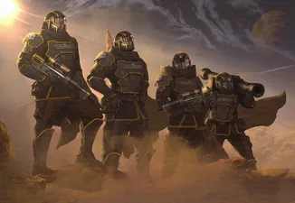
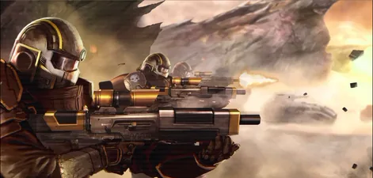
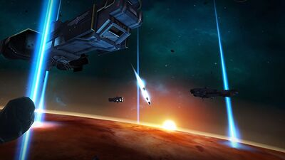
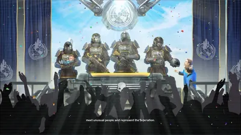

绝地潜兵们

The The 绝地潜兵, also known as The 绝地潜兵 师 of the 超级地球 武装力量[1] is a 师 of the 超级地球 武装力量 in both 绝地潜兵 1 and 绝地潜兵 2.
概述
“Our pride, the 绝地潜兵 are the scalpel of the 军事 might of 超级地球, young men and women are drafted from the regular army corps to do their part in the unrestful galaxy that is set on destroying 超级地球.
绝地潜兵 掉落 into battle using the iconic HELLPODS, 电击-absorbing tubes that break the 大气层 at 极难 velocities only to crack the ground where they open to reveal their heroic cargo.— 绝地潜兵 1 Encyclopedia 描述
The 绝地潜兵 处决 missions far behind enemy lines, deployed by Hellpods fired from the 超级驱逐舰.
The 绝地潜兵' 主要目标 is to disrupt 敌对 presence on the 行星 as much as possible, to assist the 超级地球 武装力量 in securing planets for 超级地球. Because of the nature of their operations being far behind the enemy lines, the 绝地潜兵 are always expected to encounter stiff 抗性 from the enemy.
如果绝地潜兵在战斗中阵亡，会有另一名绝地潜兵接替，以确保任务顺利进行。
Every 绝地潜兵 is armed with 武器, 护甲 of their choice, and 战略配备 balls, which are used to 呼叫 战略配备 from the 超级驱逐舰.
In 超级地球 社会, 绝地潜兵 are hailed as heroes of the fallen and martyrs for 超级地球.
绝地潜兵雇佣合同
In 绝地潜兵 2, a contract of employment is displayed on large, black plaques in the Graduation Area of the Training 设施. The entry can be read here.
历史
“Have I told you about the Hellpods yet? These 庞大 near-suicidal pods were invented to 反制 the 威胁 of the oppressive regime of the socialists that had dug themselves in on Northman's Creek. 超级地球 was unable to gain air superiority and therefore we developed these supersonic pods equipped with stabilizers and 极难 电击 absorbers that can hit a space-coin and allow for drops into 基本上 any 类型 of 地形. As fifty 绝地潜兵 dropped into the 议会 and quickly relieved the regime from power... and life, their troops scattered and the fight was easily won. Northman's Creek was once again united with the 联邦 of 超级地球.
— Chief Communications 军官
起源
The 绝地潜兵 have their origin in the 超级地球 Legion. 详情 on the legion are currently scarce; their 护甲 is sold on the 超级商店 as the SC-37 Legionnaire 护甲.
超级地球统一前
Before 超级地球 was properly united, the 绝地潜兵 doubled as both riot police and a fighting force.[2]
第一次银河战争前
While the date is not stated, the 绝地潜兵 were deployed via Hellpods, originally developed to 反制 an socialist regime that had dug itself in on Northman's Creek. Fifty 绝地潜兵 dropped into the 议会 and killed the leaders of the regime, bringing Northman's Creek into 超级地球's fold again.
第一次银河战争
In the 第一次银河战争, the 绝地潜兵 fought agaist the Bugs, 生化人, and 光能者. They deployed behind the 前线 and engaged in missions that disrupted the 敌人, acting as the scapels for the SEAF.
第一次银河战争的余波
“I can't believe I'm here for the first real 绝地潜兵 activation in a hundred years. Of course there were the patriotism parades and anti-dissidence operations, but this- this is the real thing."
— 服务 技术员
第一次银河战争胜利后，绝地潜兵师在礼仪游行和偶尔的反异见行动之外被正式解散。
第二次银河战争
In 2184, 超级地球 reactivated the 绝地潜兵 师 for 特殊 军事 operations that would eventually escalate into the 第二次银河战争.
绝地潜兵1

绝地潜兵 from the 第一次银河战争
绝地潜兵 spreading Liberty
Hellpods being launched
绝地潜兵 engaging in public relations- 绝地潜兵 celebrating Liberty Day
绝地潜兵2
 绝地潜兵 eliminating 终结族
绝地潜兵 eliminating 终结族

海报
 Enlistment 宣传
Enlistment 宣传
参考资料
- ↑ 绝地潜兵 Contract of Employment
- ↑ The 描述 of the 绝地潜兵 1:捍卫者 Pack